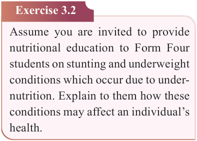
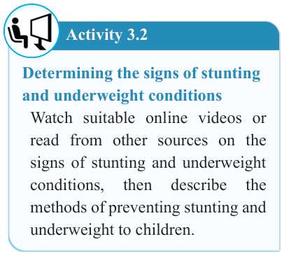

58


Food and Human Nutrition

Form Two


Signs and symptoms of stunting
A stunted child is shorter than other children of the same age. A stunted child may have a poor immune system, brain dysfunction and delayed organ development. Children who suffer from stunting are less likely to achieve their full height and cognitive potentials in adulthood. c) Underweight
Underweight is a form of malnutrition resulting from either wasting, stunting or combined effects of both. In children, it is usually a result of low weight for age and can be measured as the weight-for- age of a child. Underweight for adults can be defined using Body Mass Index
(BMI) which is an estimate of body fat based on height and weight. A person may be underweight due to inadequate food intake or improper metabolism of nutrients in the body. This can be due to intake of medicines that affect appetite, stressful
life,
illnesses,
excessive
exercise and psychological disorders such as anorexia nervosa characterized by an obsessive desire to lose weight by refusing to eat.
Signs and symptoms of underweight
Signs and symptoms of underweight include rapid weight loss, veiny arms and seemingly too large joints, hair loss, weak bones and appetite loss. Other signs and symptoms include dizziness,
fatigue as well as poor growth and development especially for children.
Activity 3.2
Determining the signs of stunting and underweight conditions
Watch suitable online videos or read from other sources on the signs of stunting and underweight conditions,
then
describe
the
methods of preventing stunting and underweight to children.
Exercise 3.2
Assume you are invited to provide nutritional education to Form Four students on stunting and underweight conditions which occur due to under- nutrition. Explain to them how these conditions may affect an individual’s health. d) Micronutrient-related malnutrition
Micronutrient-related malnutrition refers
to disorders that arise when the body lacks essential vitamins or minerals needed in small amounts for proper growth,
development,
and
overall
functioning. Micronutrients enhance processes by which other nutrients are digested, absorbed, metabolised or built into essential body structures. The most common micronutrient-related malnutrition in Tanzania includes Iron
17/09/2025 16:30